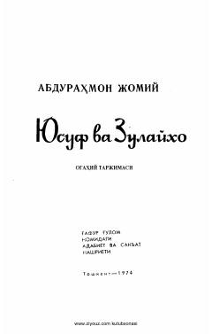

YVAbdurahmon Jomiyning Ogahiy tarjima qilgan mashhur mumtoz dostoni.
Ushbu asar buyuk mutafakkir Abdurahmon Jomiy qalamiga mansub bo'lib, Muhammad Aminxo'ja Ogahiy tomonidan o'zbek tiliga tarjima qilingan. Doston Sharq mumtoz adabiyotining eng sara namunalaridan biri bo'lib, insoniy muhabbat, sadoqat va ma'naviy poklik g'oyalarini tarannum etadi. Kitob 1974 yilda Toshkent shahrida G'afg'ur G'ulom nomidagi Adabiyot va san'at nashriyotida chop etilgan.